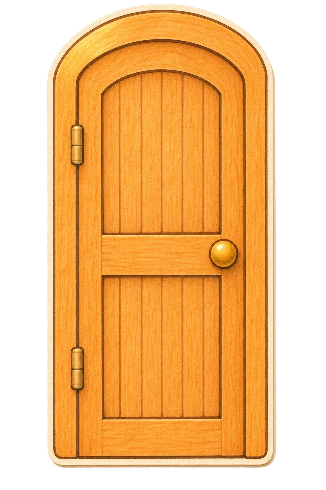

桌面小窝
···
小窝工具
×
来访
聊天
观察
邀请来访
主动来访
关闭敲门
欢迎敲门
随时欢迎
正在忙
试一次敲门
请进
下次吧
设置桌宠禁停区
刷新设置
定时刷新
分钟
启用
保存
取消
取消窗口任务
＋
发到房间
发送
添加附件
窗口任务
观察审核
回复候选
发布回复
摘要候选
保存摘要
丢弃候选
已发布回复
已保存的观察摘要
×
查看屏幕
授权查看屏幕
自主观察窗口
授权自主观察窗口
画面仅交给本次观察的模型服务，服务可能按自身规则保留画面和会话。
自主观察显示器
管理 ›
控制窗口
授权控制窗口
访问站点
授权访问站点
‹ 小窝工具
角色空闲时，可以自己决定是否看一眼获准的屏幕。
选择角色与显示器
‹ 自主观察显示器
角色
显示器
确认后将替换这位角色原来的显示器授权。
取消
确认授权
发送方式
普通桌边消息
先靠近再查看窗口
先靠近再操作窗口
执行角色
带入输入框
授权隔离浏览器
角色
站点来源
取消
继续